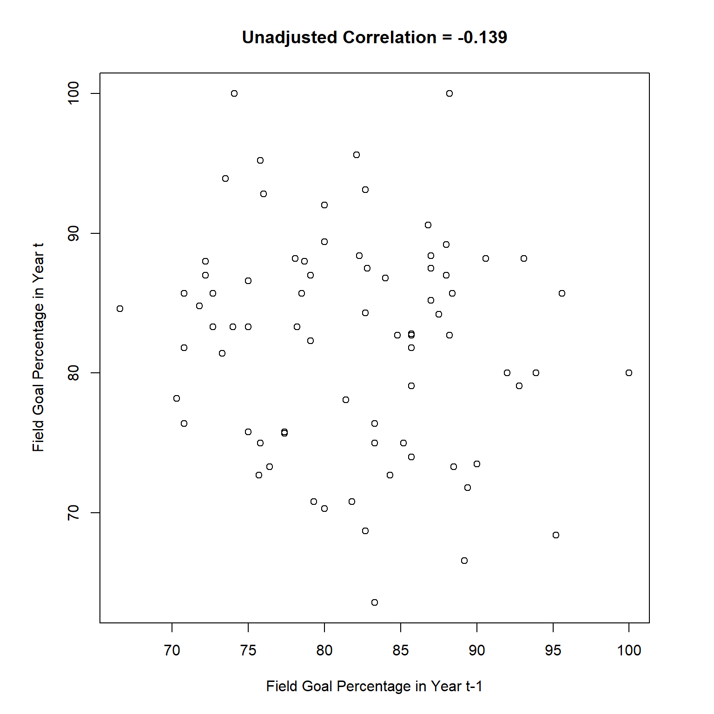
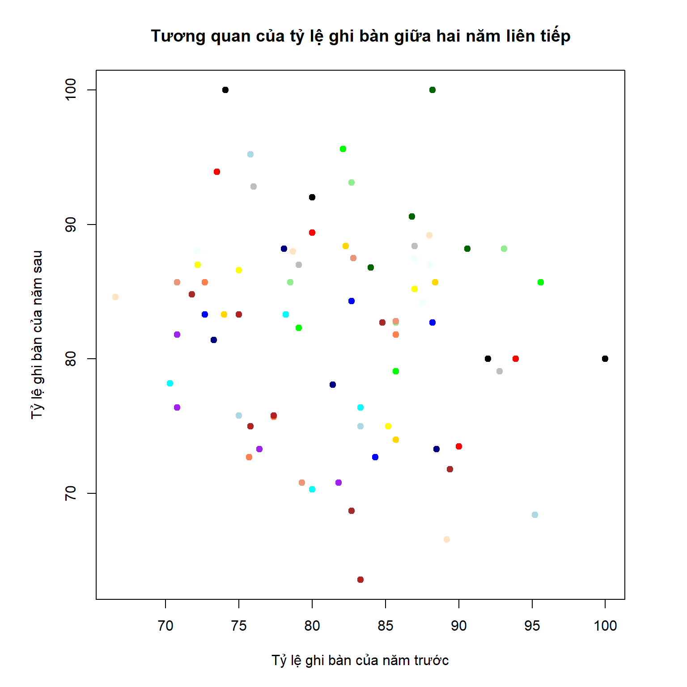

Nội dung của tài liệu hướng dẫn này bám theo giáo trình A modern approach to regression with R(Sheather 2009). Trọng tâm của tài liệu này nói về việc những diễn giải chỉ có ý nghĩa khi dựa trên mô hình phù hợp.
A key theme throughout the book is that it makes sense to base inferences or conclusions only on valid models.
Dataset kicker là thông tin của 19 cầu thủ bóng bầu dục với tỷ lệ ghi bàn qua từng mùa giải. Cột FGtM1 là tỷ lệ ghi bàn ở mùa giải trước, còn cột FGt là tỷ lệ ghi bàn ở mùa giải sau.
Khi vẽ đồ thị scatter plot ta thấy không có sự tương quan giữa tỷ lệ ghi bàn của các cầu thủ.
Name Yeart Teamt FGAt FGt Team.t.1. FGAtM1 FGtM1 FGAtM2 FGtM2
1 Adam Vinatieri 2003 NE 34 73.5 NE 30 90.0 NA NA
2 Adam Vinatieri 2004 NE 33 93.9 NE 34 73.5 30 90.0
3 Adam Vinatieri 2005 NE 25 80.0 NE 33 93.9 34 73.5
4 Adam Vinatieri 2006 IND 19 89.4 NE 25 80.0 33 93.9
5 David Akers 2003 PHI 29 82.7 PHI 34 88.2 NA NA
6 David Akers 2004 PHI 32 84.3 PHI 29 82.7 34 88.2
7 David Akers 2005 PHI 22 72.7 PHI 32 84.3 29 82.7
8 David Akers 2006 PHI 12 83.3 PHI 22 72.7 32 84.3
9 Jason Elam 2003 DEN 31 87.0 DEN 36 72.2 NA NA
10 Jason Elam 2004 DEN 34 85.2 DEN 31 87.0 36 72.2
11 Jason Elam 2005 DEN 32 75.0 DEN 34 85.2 31 87.0
12 Jason Elam 2006 DEN 15 86.6 DEN 32 75.0 34 85.2
13 Jason Hanson 2003 DET 23 95.6 DET 28 82.1 NA NA
14 Jason Hanson 2004 DET 28 85.7 DET 23 95.6 28 82.1
15 Jason Hanson 2005 DET 24 79.1 DET 28 85.7 23 95.6
16 Jason Hanson 2006 DET 17 82.3 DET 24 79.1 28 85.7
17 Jay Feely 2003 ATL 27 70.3 ATL 40 80.0 NA NA
18 Jay Feely 2004 ATL 23 78.2 ATL 27 70.3 40 80.0
19 Jay Feely 2005 NYG 42 83.3 ATL 23 78.2 27 70.3
20 Jay Feely 2006 NYG 17 76.4 NYG 42 83.3 23 78.2
21 Jeff Reed 2003 PIT 32 71.8 PIT 19 89.4 NA NA
22 Jeff Reed 2004 PIT 33 84.8 PIT 32 71.8 19 89.4
23 Jeff Reed 2005 PIT 29 82.7 PIT 33 84.8 32 71.8
24 Jeff Reed 2006 PIT 16 68.7 PIT 29 82.7 33 84.8
25 Jeff Wilkins 2003 STL 42 92.8 STL 25 76.0 NA NA
26 Jeff Wilkins 2004 STL 24 79.1 STL 42 92.8 25 76.0
27 Jeff Wilkins 2005 STL 31 87.0 STL 24 79.1 42 92.8
28 Jeff Wilkins 2006 STL 26 88.4 STL 31 87.0 24 79.1
29 John Carney 2003 NO 30 73.3 NO 35 88.5 NA NA
30 John Carney 2004 NO 27 81.4 NO 30 73.3 35 88.5
31 John Carney 2005 NO 32 78.1 NO 27 81.4 30 73.3
32 John Carney 2006 NO 17 88.2 NO 32 78.1 27 81.4
33 John Hall 2003 WAS 33 75.7 NYJ 31 77.4 NA NA
34 John Hall 2004 WAS 11 72.7 WAS 33 75.7 31 77.4
35 John Hall 2005 WAS 14 85.7 WAS 11 72.7 33 75.7
36 John Hall 2006 WAS 11 81.8 WAS 14 85.7 11 72.7
37 Kris Brown 2003 HOU 22 81.8 HOU 24 70.8 NA NA
38 Kris Brown 2004 HOU 24 70.8 HOU 22 81.8 24 70.8
39 Kris Brown 2005 HOU 34 76.4 HOU 24 70.8 22 81.8
40 Kris Brown 2006 HOU 15 73.3 HOU 34 76.4 24 70.8
41 Matt Stover 2003 BAL 38 86.8 BAL 25 84.0 NA NA
42 Matt Stover 2004 BAL 32 90.6 BAL 38 86.8 25 84.0
43 Matt Stover 2005 BAL 34 88.2 BAL 32 90.6 38 86.8
44 Matt Stover 2006 BAL 16 100.0 BAL 34 88.2 32 90.6
45 Mike Vanderjagt 2003 IND 37 100.0 IND 31 74.1 NA NA
46 Mike Vanderjagt 2004 IND 25 80.0 IND 37 100.0 31 74.1
47 Mike Vanderjagt 2005 IND 25 92.0 IND 25 80.0 37 100.0
48 Mike Vanderjagt 2006 DAL 15 80.0 IND 25 92.0 25 80.0
49 Neil Rackers 2003 ARZ 12 75.0 CIN 18 83.3 NA NA
50 Neil Rackers 2004 ARZ 29 75.8 ARZ 12 75.0 18 83.3
51 Neil Rackers 2005 ARZ 42 95.2 ARZ 29 75.8 12 75.0
52 Neil Rackers 2006 ARZ 19 68.4 ARZ 42 95.2 29 75.8
53 Olindo Mare 2003 MIA 29 75.8 MIA 31 77.4 NA NA
54 Olindo Mare 2004 MIA 16 75.0 MIA 29 75.8 31 77.4
55 Olindo Mare 2005 MIA 30 83.3 MIA 16 75.0 29 75.8
56 Olindo Mare 2006 MIA 22 63.6 MIA 30 83.3 16 75.0
57 Phil Dawson 2003 CLE 21 85.7 CLE 28 78.5 NA NA
58 Phil Dawson 2004 CLE 29 82.7 CLE 21 85.7 28 78.5
59 Phil Dawson 2005 CLE 29 93.1 CLE 29 82.7 21 85.7
60 Phil Dawson 2006 CLE 17 88.2 CLE 29 93.1 29 82.7
61 Rian Lindell 2003 BUF 24 70.8 SEA 29 79.3 NA NA
62 Rian Lindell 2004 BUF 28 85.7 BUF 24 70.8 29 79.3
63 Rian Lindell 2005 BUF 35 82.8 BUF 28 85.7 24 70.8
64 Rian Lindell 2006 BUF 16 87.5 BUF 35 82.8 28 85.7
65 Ryan Longwell 2003 GB 26 88.4 GB 34 82.3 NA NA
66 Ryan Longwell 2004 GB 28 85.7 GB 26 88.4 34 82.3
67 Ryan Longwell 2005 GB 27 74.0 GB 28 85.7 26 88.4
68 Ryan Longwell 2006 MIN 18 83.3 GB 27 74.0 28 85.7
69 Sebastian Janikowski 2003 OAK 25 88.0 OAK 33 78.7 NA NA
70 Sebastian Janikowski 2004 OAK 28 89.2 OAK 25 88.0 33 78.7
71 Sebastian Janikowski 2005 OAK 30 66.6 OAK 28 89.2 25 88.0
72 Sebastian Janikowski 2006 OAK 13 84.6 OAK 30 66.6 28 89.2
73 Shayne Graham 2003 CIN 25 88.0 CAR 18 72.2 NA NA
74 Shayne Graham 2004 CIN 31 87.0 CIN 25 88.0 18 72.2
75 Shayne Graham 2005 CIN 32 87.5 CIN 31 87.0 25 88.0
76 Shayne Graham 2006 CIN 19 84.2 CIN 32 87.5 31 87.0
kicker$Name <-factor(kicker$Name)
Khi nhìn vào hệ số tương quan -0.139 ta thấy không có sự khác biệt có ý nghĩa thống kê so với 0 (tức là không tương quan) vì p-value là 0.2305 > 0.05.
Pearson's product-moment correlation
data: kicker$FGtM1 and kicker$FGt
t = -1.2092, df = 74, p-value = 0.2305
alternative hypothesis: true correlation is not equal to 0
95 percent confidence interval:
-0.3535538 0.0890568
sample estimates:
cor
-0.1391935
par(pty ="s")plot(x = kicker$FGtM1,y = kicker$FGt,main ="Unadjusted Correlation = -0.139",xlab ="Field Goal Percentage in Year t-1",ylab ="Field Goal Percentage in Year t")

Tuy nhiên nhận định như vậy là không chính xác vì ta không xét riêng cho từng cầu thủ. Hay nói cách khác, nhận định này dựa trên mô hình không phù hợp.
In other words this approach is based on an invalid model.
col_ok <-c("red","blue", "yellow","green","cyan","brown","gray","navy","coral","purple","darkgreen","black","lightblue","firebrick","lightgreen","darksalmon","gold","bisque","azure")[kicker$Name]par(pty ="s")plot(x = kicker$FGtM1,y = kicker$FGt,main ="Tương quan của tỷ lệ ghi bàn giữa hai năm liên tiếp",xlab ="Tỷ lệ ghi bàn của năm trước",ylab ="Tỷ lệ ghi bàn của năm sau",col = col_ok,pch =19)

Phân tích ANOVA cho các biến trong mô hình này ta thấy tương tác giữa FGtM1:Name không có ý nghĩa thống kê, trong khi đó Name có ý nghĩa thống kê tức là allow a different intercept for each kicker, but to force the same slope across all kickers.
fit.1<-lm(FGt ~ FGtM1 + Name + FGtM1:Name,data = kicker)anova(fit.1)
Analysis of Variance Table
Response: FGt
Df Sum Sq Mean Sq F value Pr(>F)
FGtM1 1 87.20 87.199 1.9008 0.176047
Name 18 2252.47 125.137 2.7279 0.004565 **
FGtM1:Name 18 417.75 23.209 0.5059 0.938592
Residuals 38 1743.20 45.874
---
Signif. codes: 0 '***' 0.001 '**' 0.01 '*' 0.05 '.' 0.1 ' ' 1
fit.2<-lm(FGt ~ Name + FGtM1,data = kicker)anova(fit.2)
Analysis of Variance Table
Response: FGt
Df Sum Sq Mean Sq F value Pr(>F)
Name 18 1569.68 87.20 2.2599 0.01051 *
FGtM1 1 769.99 769.99 19.9538 3.9e-05 ***
Residuals 56 2160.96 38.59
---
Signif. codes: 0 '***' 0.001 '**' 0.01 '*' 0.05 '.' 0.1 ' ' 1
par(pty ="s")plot(x = kicker$FGtM1,y = kicker$FGt,main ="Tương quan của tỷ lệ ghi bàn giữa hai năm liên tiếp",xlab ="Tỷ lệ ghi bàn của năm trước",ylab ="Tỷ lệ ghi bàn của năm sau",col = col_ok,pch =19)# biến xtt <-seq(60, 100,length =100)# x nhân với hệ số gócslope.piece <-summary(fit.2)$coef[20]*tt# lấy Adam Vinatieri làm nền nên là 0points(x = tt,y =summary(fit.2)$coef[1] +0+ slope.piece,type ="l",lty =2,col =unique(col_ok)[1])# từ David Akers thì có hệ số Name tương ứngfor (i in2:19){points(x = tt,y =summary(fit.2)$coef[1] +summary(fit.2)$coef[i]+ slope.piece,type ="l",lty =2,col =unique(col_ok)[i]) }